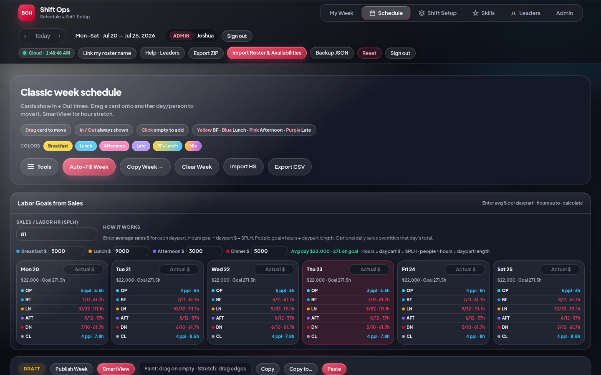
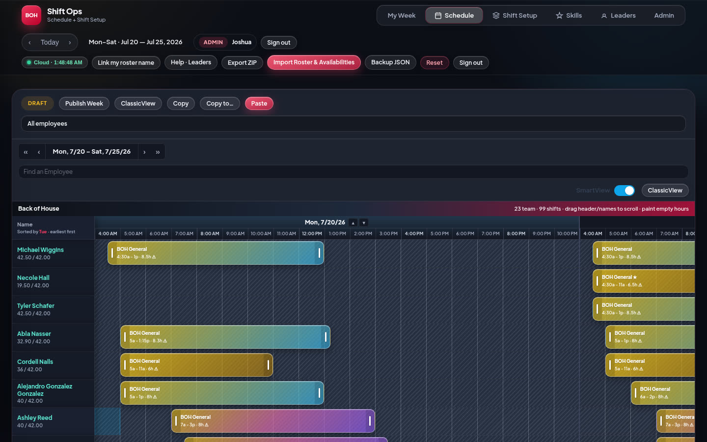
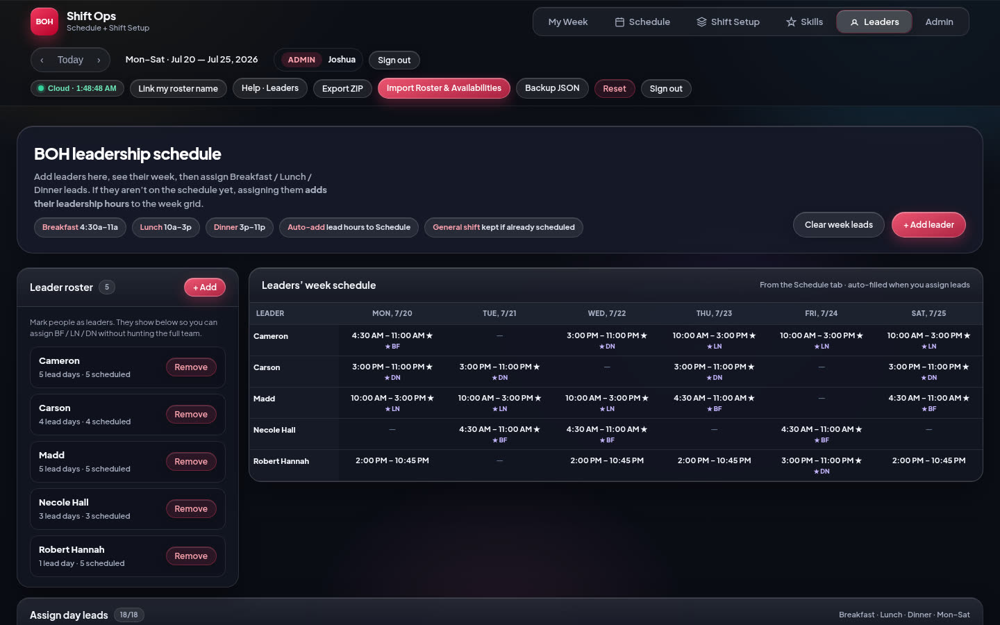
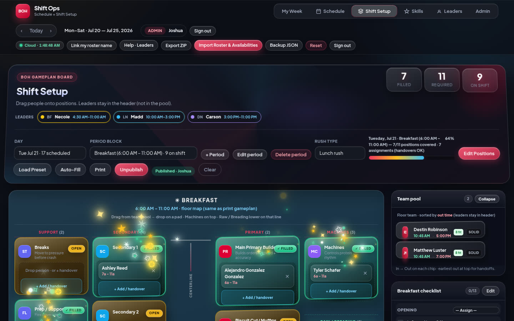
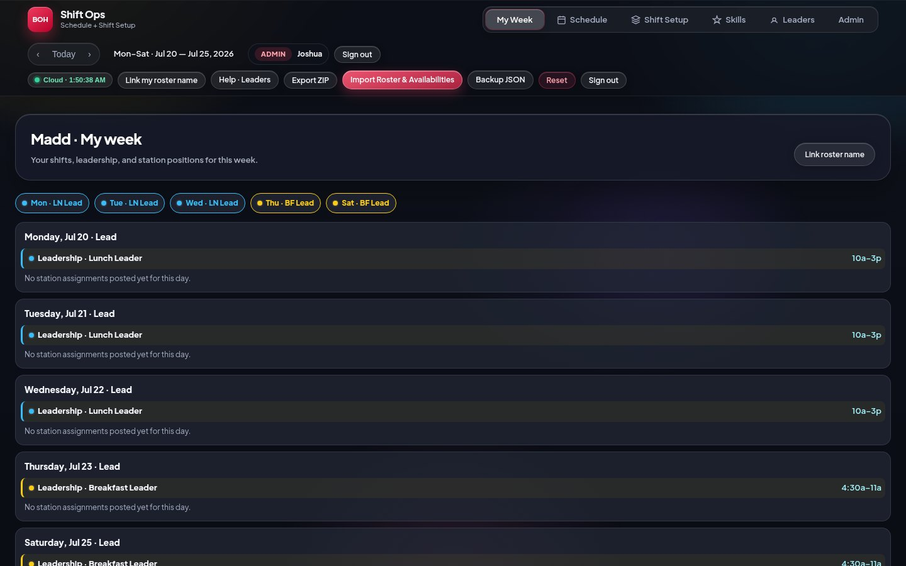
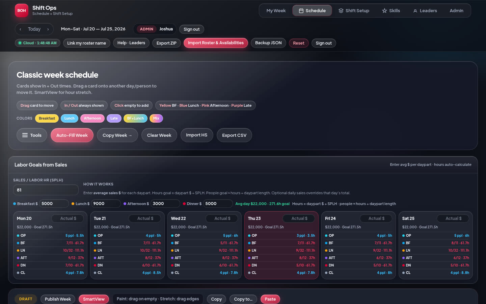

Built for managers and shift leaders at CFA Vestavia Hills BOH. Sign in, build the week, name BF/LN/DN leads, publish each period setup, and print the gameplan. Teammates use My Week to see their hours, leadership, and stations.
Put every BOH person on the Schedule with real in/out times.
Set BF / LN / DN leaders under Leaders so hours land on the grid.
Open Shift Setup → place people on stations for that daypart.
Tap Publish setup when that period board is ready for the team.
Print the 2-page gameplan for the board; leads check My Week.
This is where people get hours. Do this before station setup.

Use SmartView when you want HotSchedules-style hour bars.

Leaders run the period — they show on the Setup header, not in the station pool. Their My Week also shows leadership windows.

This is the floor board: who is on Primary, Machines, Breading, Fries, etc.

Anyone signed in can open My Week after linking their roster name.

What you hang for the team — centerline stations + side roster.

| I want to… | Do this |
|---|---|
| Sign in | Open app → username + password from Admin |
| Link my name | More → Link my roster name · or prompt after login |
| See my lead days | My Week — leadership chips + windows for BF/LN/DN |
| Put someone on the week | Schedule → empty cell → set times · or SmartView paint |
| Two shifts same day | On that day card → + Shift · or paint a second SmartView block |
| Move a shift | Drag the card (Classic) or bar (SmartView) — moves, doesn’t copy |
| Name BF / LN / DN lead | Leaders tab → pick person for that day · hours can auto-add |
| Fill stations for Lunch | Shift Setup → Day + Lunch → pool → stations |
| Add person on phone | Double-tap + Add person on the station → pick name → times |
| 3:00 handover | On the station → + Add person / handover → second name + times |
| Mark period ready | Shift Setup → Publish setup |
| See unpublished periods | Admin tab (admin only) → Unpublished setups |
| Print board sheets | Shift Setup → Print → Page 1 BF+LN · Page 2 Afternoon+Dinner |
| Pool is empty | Schedule people whose times overlap that period first |
| Lead missing from pool | Normal — leaders are header-only for that day |
| Add a manager / member | Admin → + Add user → role + optional roster link |
| Share with another device | Live app auto-connects · Pull if stale · or Export ZIP / JSON |
The live app auto-connects to the Vestavia store cloud on every phone/PC.